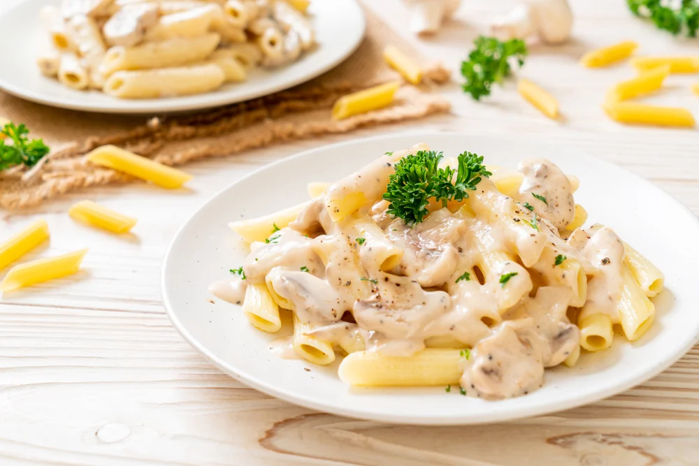
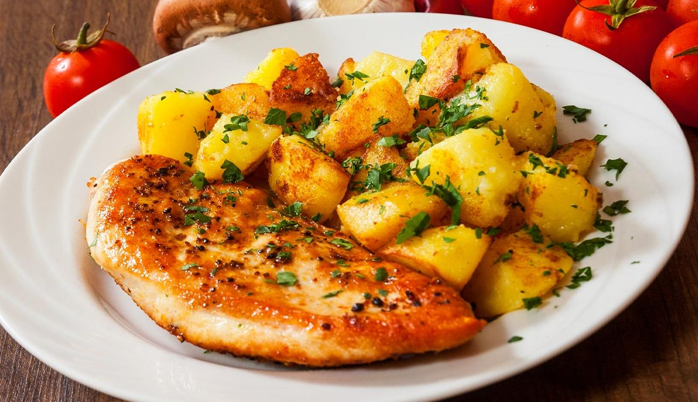
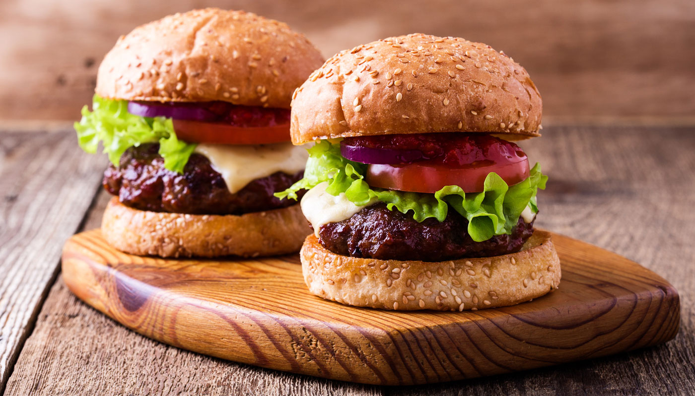

11.46.50_ff3c608b.png)
Macarrão ao Molho Branco
Este prato clássico combina macarrão com um molho cremoso de manteiga, farinha, leite e temperos. É simples, suave e delicioso, perfeito como prato principal ou acompanhamento. A noz-moscada opcional acrescenta um toque especial. Uma escolha versátil e atemporal na culinária.
ingredientes
Macarrão/Molho
- 250g de macarrão (pode ser espaguete, fettuccine, ou sua escolha)
- 2 colheres de sopa de manteiga
- 2 colheres de sopa de farinha de trigo
- 2 xícaras de leite
- Sal e pimenta a gosto
- 1/4 de colher de chá de noz-moscada (opcional)
- 1/2 xícara de queijo parmesão ralado (opcional)
Modo de preparo
- Cozinhe o macarrão de acordo com as instruções da embalagem em água salgada. Escorra e reserve.
- Enquanto o macarrão cozinha, prepare o molho branco. Em uma panela grande, derreta a manteiga em fogo médio.
- Adicione a farinha de trigo à manteiga derretida e mexa constantemente até obter uma pasta homogênea, conhecida como "roux".
- Gradualmente, adicione o leite à panela, mexendo continuamente para evitar a formação de grumos. Continue mexendo até que o molho engrosse e fique cremoso.
- Tempere o molho com sal, pimenta e noz-moscada (se estiver usando). Prove e ajuste os temperos de acordo com seu gosto.
- Se desejar, adicione o queijo parmesão ralado ao molho e mexa até que o queijo esteja completamente derretido e o molho fique ainda mais cremoso.
- Misture o macarrão cozido no molho branco e aqueça brevemente.
- Misture o macarrão cozido no molho branco e aqueça brevemente.
Frango com Batata
O Frango Assado com Batatas é uma refeição simples e deliciosa que combina pedaços de frango suculento e batatas douradas. Com uma marinada de alho, orégano e limão, esta receita oferece um sabor reconfortante. Ao assar no forno, o aroma que se espalha é irresistível, preparando o paladar para um prato caseiro que aquece o coração.
Ingredientes
frango/batata
- 4 peitos de frango (ou coxas de frango, se preferir)
- 4 batatas médias, descascadas e cortadas em pedaços
- 2 colheres de sopa de azeite de oliva
- 2 dentes de alho picados
- 1 colher de chá de orégano seco
- Sal e pimenta a gosto
- Suco de 1 limão
- Raminhos de alecrim fresco (opcional, para decorar)
Mode de Preparo
- Pré-aqueça o forno a 200°C.
- Em uma tigela grande, misture o azeite de oliva, o alho picado, o orégano, o suco de limão, sal e pimenta. Isso será a marinada para o frango e as batatas.
- Adicione o frango à marinada e certifique-se de que esteja bem revestido. Deixe marinar por pelo menos 15 minutos.
- Enquanto o frango está marinando, coloque as batatas em uma assadeira grande e regue-as com um pouco de azeite. Tempere com sal e pimenta.
- Coloque o frango sobre as batatas na assadeira.
- Asse no forno pré-aquecido por cerca de 40-45 minutos, ou até que o frango esteja cozido e as batatas estejam douradas e macias. Certifique-se de virar o frango e mexer as batatas na metade do tempo.
- Se desejar, decore com alguns raminhos de alecrim fresco antes de servir.
Hamburguer
Esta é uma receita de hambúrguer básica que pode ser personalizada de acordo com suas preferências. Adicione seus ingredientes favoritos para criar o hambúrguer perfeito para o seu gosto. Bom apetite!
Ingredientes
Hamburguer
- 500g de carne moída (pode ser uma mistura de carne bovina, suína ou de frango)
- 1/2 cebola, picada finamente
- 2 dentes de alho, picados
- 1 colher de chá de sal
- 1/2 colher de chá de pimenta preta moída
- 4 pães de hambúrguer
- Folhas de alface, tomate, cebola roxa, queijo, maionese, ketchup e mostarda (ou outros acompanhamentos de sua preferência)
Modo de Preparo
- Em uma tigela, misture a carne moída, a cebola picada, o alho, o sal e a pimenta até que todos os ingredientes estejam bem combinados.
- Divida a mistura em 4 partes iguais e forme 4 hambúrgueres, pressionando-os levemente para que fiquem firmes e com cerca de 1,5 cm de espessura. Faça um pequeno rebaixo no centro de cada hambúrguer com o polegar para evitar que eles inchem enquanto cozinham.
- Pré-aqueça uma grelha ou frigideira antiaderente em fogo médio-alto. Você também pode grelhar os hambúrgueres ao ar livre em uma churrasqueira.
- Cozinhe os hambúrgueres por cerca de 3-4 minutos de cada lado, ou até que estejam cozidos de acordo com o seu gosto (malpassado, ao ponto ou bem-passado).
- Enquanto os hambúrgueres estão cozinhando, você pode tostar os pães na grelha ou em uma torradeira.
- Monte os hambúrgueres colocando os hambúrgueres cozidos nos pães e adicione suas escolhas de acompanhamentos, como alface, tomate, cebola roxa, queijo, maionese, ketchup, mostarda, etc.
- Sirva imediatamente e aproveite!
Pizza de Calabrasa

Ingredientes
massa
- 1 e 1/2 xícaras de água morna
- 2 colheres de chá de açúcar
- 2 colheres de chá de fermento seco ativo
- 4 xícaras de farinha de trigo
- 2 colheres de sopa de azeite de oliva
- 1 colher de chá de sal
ingredientes
recheio
- 1 sachê de Molho de tomate
- 150g de linguiça calabresa fatiada finamente
- 2 xícaras de queijo mussarela ralado
- Orégano a gosto
Modo de Preparo
da massa
- Em uma tigela pequena, misture a água morna, o açúcar e o fermento. Deixe repousar por cerca de 5-10 minutos, até que a mistura fique espumosa.
- Em uma tigela grande, misture a farinha de trigo e o sal. Faça um buraco no centro e despeje a mistura de fermento e o azeite.
- Misture tudo até que a massa fique homogênea. Se necessário, adicione um pouco mais de farinha se a massa estiver muito pegajosa.
- Cubra a tigela com um pano limpo e úmido e deixe a massa descansar em um local quente por cerca de 1-2 horas, ou até que tenha dobrado de tamanho.
Modo de preparo
montagem
- Pré-aqueça o forno a 220°C.
- Divida a massa em duas partes e abra cada uma delas em uma superfície enfarinhada para formar dois discos de pizza finos.
- Transfira a massa para uma assadeira ou pedra de pizza.
- Espalhe o molho de tomate sobre a massa, deixando uma borda para a crosta.
- Distribua metade do queijo mussarela ralado sobre o molho.
- Adicione as fatias de linguiça calabresa e, em seguida, a outra metade do queijo mussarela. Polvilhe com orégano a gosto.
- Leve ao forno pré-aquecido e asse por cerca de 12-15 minutos, ou até que a crosta fique dourada e o queijo derretido e borbulhante.
- Retire a pizza do forno, corte em pedaços e sirva quente.